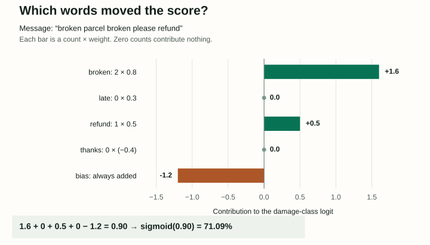
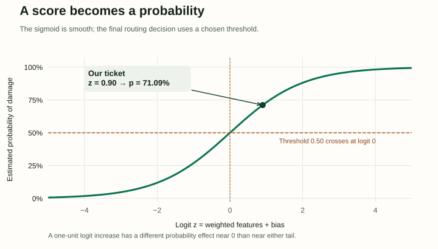

04 / Learning a decision from labeled text
Logistic Regression for Text: From Word Counts to a Decision
A support ticket arrives: “broken parcel broken please refund.” Should it go to the damage team? Logistic regression gives us a small enough model to follow every number, from the words in that message to a learned probability and a routing decision.
Representation chooses what the model can see. Weights turn that representation into a score. A loss teaches the weights. A threshold turns a probability into an action. We will calculate each step, then examine what the calculation leaves out.
An original study companion to Jurafsky and Martin’s Chapter 4: Logistic Regression and Text Classification, August 19, 2026 draft. All tickets, weights, figures and evaluation scores here are invented teaching examples.
1. Decide what the model is allowed to see
Define the label first: y = 1 means the ticket concerns physical damage; y = 0 means it does not. “Positive” is a mathematical name for class 1. It does not mean a happy customer. A consistent annotation rule matters: a refund request could concern damage, lateness, or a change of mind.
For our toy representation, lowercase the text and split on spaces. The example contains no punctuation. Freeze the vocabulary order as [broken, late, refund, thanks]. Count each vocabulary word. Everything else is ignored, giving a bag-of-words vector x = [2, 0, 1, 0]. The position of each number carries its meaning; swapping positions without swapping the weights would change the model.
| Feature | Count xⱼ | Weight wⱼ | Contribution wⱼxⱼ |
|---|---|---|---|
| broken | 2 | 0.8 | 1.6 |
| late | 0 | 0.3 | 0 |
| refund | 1 | 0.5 | 0.5 |
| thanks | 0 | −0.4 | 0 |
This representation loses word order. “Not broken” still activates broken; a unigram model cannot express every negation pattern. Word-pair features such as not broken, character n-grams, or learned representations can retain different evidence. Binary presence features would also treat one occurrence and two occurrences alike. These are different models of the input, not cosmetic preprocessing changes.
Real text vocabularies can have many thousands of entries, while one ticket activates only a few. A sparse representation stores those nonzero positions. Fit vocabulary selection and any document-frequency statistics on training data; apply the same fitted transform to later tickets.
2. Add evidence, then map it to a probability
Suppose the weights are w = [0.8, 0.3, 0.5, −0.4], with bias b = −1.2. We chose these numbers for illustration; a real training procedure estimates them. Multiply matching entries, add the results, and add the bias. The result z is the logit.
= 0.8(2) + 0.3(0) + 0.5(1) − 0.4(0) − 1.2 = 0.90

On a narrow screen, scroll horizontally to inspect the complete figure.
A logit can be any real number, so it cannot itself be a probability. The sigmoid maps it into the interval between zero and one:
σ(0.90) = 0.7109495; P(y = 0 | x) = 1 − p = 0.2890505
The two probabilities sum to one. At z = 0, the model assigns 0.5 to each class. Increasing z raises the class-1 probability, but its effect shrinks near the ends of the sigmoid. A weight of 0.8 therefore does not mean “add 80 percentage points.” Holding other features fixed, one extra broken adds 0.8 to log odds, multiplying the odds p/(1 − p) by e0.8 ≈ 2.23.

On a narrow screen, scroll horizontally to inspect both axes.
For now, route a ticket to the damage team when p ≥ 0.50. Our ticket qualifies. This inequality includes equality by convention. The model’s estimated 71.09% is not a guarantee about any particular message; whether such estimates match observed frequencies is an empirical calibration question.
3. Reward the probability assigned to the observed label
A human labels this ticket y = 1. A prediction of 0.71 is more compatible with that label than 0.10, even though both probabilities are legal. We need a training loss that expresses this preference continuously. Counting only correct versus incorrect decisions would ignore improvements that keep the prediction on the same side of 0.50.
The observed label has probability p when y = 1 and probability 1 − p when y = 0. Binary cross-entropy takes the negative natural logarithm of that observed-label probability:
For our y = 1 ticket: L = −ln(0.7109495) = 0.341154 nats
If the same features had label y = 0, the loss would be −ln(0.2890505) = 1.241154 nats. The model would be penalized more because it favored the other class. Natural logarithms give units of nats; base-two logarithms would give bits. Training typically minimizes average loss over labeled examples, rather than driving one selected example’s loss down at any cost.
For implementation, compute loss from the logit using a numerically stable expression: max(z, 0) − y*z + log1p(exp(−abs(z))). Directly taking logarithms of a sigmoid that rounded to zero or one can produce infinities. This expression calculates the same loss while avoiding that numerical failure.
4. Let one labeled example adjust the weights
A gradient measures how the loss changes when a parameter changes slightly. For sigmoid plus binary cross-entropy, the result has a simple form: prediction error times input. Let r = p − y. Then ∂L/∂wⱼ = rxⱼ and ∂L/∂b = r. The bias acts like a feature whose input is always one.
∇wL = [−0.5781010, 0, −0.2890505, 0]
∂L/∂b = −0.2890505
The negative derivatives say that increasing these active weights would locally reduce this positive example’s loss. With learning rate η = 0.2, gradient descent subtracts η times each derivative. Use the same old parameters to compute every derivative, then update them together:
= [0.9156202, 0.3, 0.5578101, −0.4]
b′ = −1.2 − 0.2(−0.2890505) = −1.1421899
Recompute the ticket: z′ = 2(0.9156202) + 0.5578101 − 1.1421899 = 1.2468606. Its new probability is 0.7767559, and its loss falls to 0.2526291. The repeated word produced twice the weight gradient of a single occurrence. The absent features received zero data gradient in this step.
This is one stochastic-gradient step on one example, without regularization. It does not prove the model improved on other tickets. A negative example containing refund would push that weight in the opposite direction. Mini-batch training averages gradients from several examples before updating; the fitted parameters reflect their competing evidence. Learning rate controls step size, and an excessively large step can increase the objective.
Why does the derivative simplify to p − y?
The loss derivative with respect to p is −y/p + (1 − y)/(1 − p). The sigmoid derivative is p(1 − p). Multiplying them gives −y(1 − p) + (1 − y)p = p − y. Finally, z changes by xⱼ for a unit change in wⱼ, so the weight derivative is (p − y)xⱼ.
5. Keep rare clues from dominating the fit
A word that appears once, in one damaged-parcel ticket, can look deceptively decisive. Regularization adds a preference for restrained parameters. With our explicit L2 convention, the objective is average cross-entropy plus (λ/2)∑wⱼ². Its weight gradient gains λwⱼ; here we leave the bias unpenalized.
At λ = 0.1, our original weights contribute a penalty of 0.05(0.64 + 0.09 + 0.25 + 0.16) = 0.057. Even late, absent from the current example, now has a regularization gradient of 0.03. An η = 0.2 step moves its weight from 0.300 to 0.294. This is why “absent features do not change” applied only to the unregularized data gradient.
L2 tends to shrink weights; L1 uses absolute values and can set some weights exactly to zero. Their effect depends on feature scaling: counts, normalized counts and TF-IDF produce different parameter sizes. Fit any scaling inside the training split, and select regularization strength using validation data.
For fixed features, the logistic cross-entropy objective is convex, so local minima are global minima. Convexity alone does not guarantee a unique finite solution or convergence for an arbitrary optimizer setting. With perfectly separable data, unregularized weights can grow without bound while loss approaches zero. Regularization addresses more than an aesthetic preference for small numbers.
6. Give each class a score when there are several choices
Suppose the task instead assigns exactly one label: damage, billing, or other. Multinomial logistic regression learns one weight vector and bias per class. The three resulting logits might be [1.2, 0.4, −0.6]. Applying three independent sigmoids would not make their probabilities sum to one.
P(y = k | x) = exp(zk) / ∑j exp(zj)
Softmax compares all class scores through a shared denominator. Subtract the maximum logit before exponentiating: [0, −0.8, −1.8] produces positive values approximately [1, 0.449329, 0.165299]. Divide by their sum, 1.614628, to obtain [0.619338, 0.278286, 0.102376]. Subtracting that common constant preserves the probabilities and improves numerical stability.
If the true label is billing, the loss is −ln(0.278286) ≈ 1.279104. Each class’s weight gradient is (pk − 1[y = k])x: raise the observed class’s score and lower the competitors. With two classes, softmax is equivalent to a sigmoid of their score difference. If a ticket can legitimately have several labels, separate sigmoid outputs with a suitable multi-label objective express a different task; a single softmax would force competition between those labels.
7. Judge the decisions, then choose a threshold
Return to damage versus no damage. A true positive is a damaged-ticket detection; a false positive is an incorrect damage routing. A false negative misses a damaged ticket. A true negative correctly leaves another ticket out. Precision asks what fraction of positive predictions were correct. Recall asks what fraction of actual positives were found.
Recall = TP / (TP + FN)
F1 = 2TP / (2TP + FP + FN)
The lab uses eight constructed labeled validation cases, separate from our single training example. At threshold 0.50, TP = 3, FP = 1, FN = 1, TN = 3. Precision, recall and F1 are all 75%. Move only the threshold: the model’s probabilities will remain unchanged.
| ID | p | y | Decision |
|---|---|---|---|
| A | 0.92 | 1 | Route to damage team · TP |
| B | 0.81 | 0 | Route to damage team · FP |
| C | 0.73 | 1 | Route to damage team · TP |
| D | 0.61 | 1 | Route to damage team · TP |
| E | 0.48 | 0 | Other route · TN |
| F | 0.35 | 1 | Other route · FN |
| G | 0.22 | 0 | Other route · TN |
| H | 0.08 | 0 | Other route · TN |
At 0.30, the model catches all four damaged tickets but also routes two others: precision is 66.7%, recall 100%, and F1 80%. At 0.75, it keeps A and B, giving precision 50% and recall 25%. Raising a threshold cannot increase recall on these fixed scores, but precision need not increase at every step. Removing a correct prediction while retaining a false positive can make it worse.
At threshold 1.00, nothing is selected. Precision is undefined because its denominator is zero; recall and F1 are zero here because positive examples exist in the labeled set but none were found. State how undefined metrics are handled when comparing tools.
Class imbalance changes the stakes. If only 20 of 1,000 tickets concern damage, always predicting “other” achieves 98% accuracy and zero damage recall. Report the positive-class metrics, prevalence and error counts. Class-weighted training can emphasize rare labels, but changes the fitting objective and can alter probability calibration. Threshold selection changes actions after fitting; it is not the same intervention.
For multiple exclusive classes, macro-F1 averages each class’s F1, giving rare and common classes equal weight. Micro-F1 pools their counts; in ordinary single-label classification over all classes it equals accuracy. Neither is universally preferable: choose based on the operational question and show per-class results.
8. Keep fitting, selecting and reporting separate
Fit vocabulary, preprocessing and weights on training data. Use validation data to choose features, regularization, training duration and the decision threshold. Evaluate the chosen procedure on a held-out test set. If repeated experiments start adapting to that test set, it is no longer an independent final check. Split by customer, document source or time when those boundaries match the intended deployment.
A coefficient describes an association within this representation and fitted model. It does not establish that a word causes damage. Correlated features can trade weight, and a customer name or dialect marker may become an undesirable shortcut. Inspect errors across relevant groups and conditions, including negation, misspellings and unfamiliar products. A good overall score can coexist with costly concentrated failures.
Small score differences also need context. Compare models on the same held-out examples, report the actual change and uncertainty, and preserve paired outcomes when resampling. A p-value is not the probability that the new system is better. The textbook develops statistical comparison and classification harms further in §§4.11–4.12.
Reproduce the numbers
Download the standard-library Python example and run python3 logistic-example.py. It recomputes the vector, probability, loss, parameter update and softmax; it also checks the analytic gradients against finite differences and verifies three lab thresholds. The figure-generation script regenerates both SVGs with Matplotlib.
r = sigmoid(dot(w, x) + b) - y
new_w = [wj - learning_rate * r * xj for wj, xj in zip(w, x)]
new_b = b - learning_rate * r
# This is one unregularized example update; dot denotes a dot product.Does a negative weight reduce every ticket’s damage probability?
Its contribution depends on the corresponding feature value. For our nonnegative counts, a negative weight reduces the logit when its count is positive, and contributes nothing when its count is zero. Different feature transformations can change that interpretation.
Can the threshold lab improve cross-entropy?
No. The lab leaves every probability fixed, so cross-entropy stays fixed. It changes predicted labels and therefore the confusion counts, precision, recall and F1.
Source and next step
Source: Daniel Jurafsky and James H. Martin, Speech and Language Processing, third-edition draft, August 19, 2026, Chapter 4. Read §§4.1–4.6 for binary classification and optimization, §§4.7–4.10 for softmax and evaluation, and §4.14 for regularization. The calculations above use a separate original example with explicit conventions.
Our classifier can only use the features we supplied. The next chapter asks how to represent words so that related uses can share evidence, even when they occupy different vocabulary positions.